How-to
How-to section contains examples on how to include common energy system components in your model. The examples assume that you have sufficient understanding of FlexTool basics (e.g. by doing the tutorial). Each example will either include an example database file that is located in the 'how to examples databases' folder or the example is included in the init.sqlite as a scenario. If the example is in its own database, you can switch to that database by selecting the 'input' data store in the workflow and then changing the database by clicking the folder icon next to the current database file path in the 'Data store properties' widget. Navigate to the 'how to example databases' folder and choose the appropriate database.
This section is divided into two parts:
Building parts of the model:
- How to create basic temporal structures for your model
- How to create a PV, wind or run-of-river hydro power plant
- How to connect nodes in the same energy network
- How to set the demand in a node
- How to add a storage unit (battery)
- How to make investments (storage/unit)
- How to create combined heat and power (CHP)
- How to create a hydro reservoir
- How to create a hydro pump storage
- How to add a reserve
- How to add a minimum load, start-up and ramp
- How to add CO2 emissions, costs and limits
- How to create a non-synchronous limit
- How to see the VRE curtailment and VRE share results for a node
Setting different solves:
- How to run solves in a sequence (investment + dispatch)
- How to create a multi-year model
- How to use a rolling window for a dispatch model
- How to use Nested Rolling window solves (investments and long-term storage)
- How to use stochastics (representing uncertainty)
General:
- How to use CPLEX as the solver
- How to create aggregate outputs
- How to enable/disable outputs
- How to make the Flextool run faster
How to create basic temporal structures for your model
(time_settings_only.sqlite)
FlexTool allows to build models for different kinds of purposes and has therefore a flexible temporal structure, which requires some learning at first. To get you started, this how-to creates three different timelines: a full year, a 48h timeline and a timeline with five one-week periods to represent a full year. To be able to choose which of these are used in a given scenario, three alternatives are created: init, init_2day-test, init_5week-invest.
The names of these alternatives hint at the intended use of each timeline. Even when you are building a large model with a long timeline, it is better to use a short 48 hour timeline for testing purposes when building the model. Using five one-week periods, i.e. "a representative periods", in an investment model is a method to reduce the model size and consequently solve time. More about that in How to run solves in a sequence (investment + dispatch)
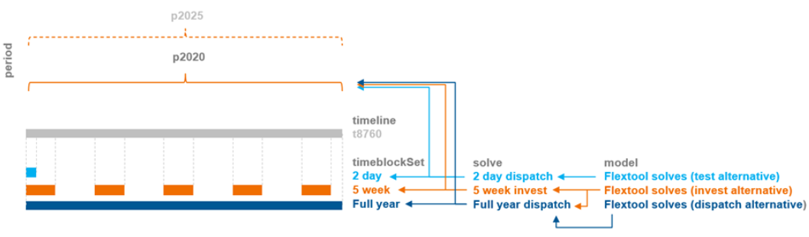
To define a temporal structure for a model instance, you need to create the following objects and relationships:
timelineobject called y2020 with a map-type parametertimestep_durationthat defines the timeline the time series data in the model will need to use. It contains, in the first column, the name of each timestep (e.g. t0001 or 2022-01-01-01) and, in the second column, the length of the timestep in hours (e.g. 1.0). The timestep names here must match the timestep names in other time series likeinfloworprofile. Here all of the three options use the same full year timeline i.e. timesteps from t0001 to t8760 with a step size of one hour.timeblocksetobjects called full-year, 2day and 5week. Each of them need a map-type parameterblock_durationto define a time block using a timestep name to indicate where the timeblock starts and a number to define the duration of the timeblock in timesteps: (t0001, 8760) for the full-year and (t4001 and 48.0) for the 48h. The timeline is larger than the 48 hours, but this way the solver uses 48 hours specified. The 5week needs five starting points t2521, t4538, t5041, t7057 and t8233 with all having the length of 168.0timeblocksetneeds to be connected to the timeline. This is done by adding thetimeblockset__timelinerelationships (full-year| y2020), (2day| y2020), (5weeks| y2020). From therelationship treeright-click on thetimeblockset__timelinerelationship class to 'Add relationships...'.-
solveobjects called full-year-dispatch, 2day-dispatch and 5week-invest. In addition, they need the following parameters: -
a map-type parameter
period_timeblockSetto define the timeblockset to be used by each period. Here each of the three use theirtimeblockSetto describe the same period p2020. The first column of the map has the period: p2020 and the second column thetimeblockSet: full-year, 2day or 5week - an array-type parameter
realized_periodsto define the periods that are realised from thesolvenamed by the object (the first column of an array is an index number starting with 0, the second column contains the period to be realized in the results: p2020 for all the solves here) -
a parameter
solve_mode, to be set to single_solve in these examples -
Finally, a
modelobject will define the solves to be included in a one model instance. They are defined in the array parametersolves. For these examples, the model name is flextool and for eachsolvethe name of thesolveshould be given in thesolvesarray (distinguished by the alternative): full-year-dispatch, 2day-dispatch or 5week-invest.
Be careful when choosing datatypes! Maps need to be maps not arrays. (In the future, an update is coming to toolbox to ensure compliance.)

How to create a PV, wind or run-of-river hydro power plant
(init.sqlite scenario: wind) init - west - wind
These three power plant types don't use any commodities (i.e. fuels), but are instead dependant on a timeseries profile. To create these plants one needs an output node, an unit and a profile.
The unit only needs parameters:
is_active: yesexisting: [The maximum capacity of the plant] Additionally these parameters should be at their default values:conversion_method: constant_efficiencyefficiency: 1
The profile object only has one parameter: profile. It is a timeseries map which tells what fraction of the capacity the plant can produce at each timestep.
The relationships
unit__outputnode: (plant|output node) andunit__node__profile: (plant|output node|profile) need to be both created.
The unit__node__profile relationship needs a parameter profile_method that has three options: upper_limit, lower_limit and exact. It states how the profile is considered. In most cases the upper_limit option should be used as it allows the plant to curtail the production if there is more supply than demand. Otherwise the output node might have to use downward_penalty to spill energy.
The same profile can be used for multiple unit__outputnodes (and that is why the profile is not a unit parameter but its own entity).

How to connect nodes in the same energy network
(connections.sqlite)
Typically nodes are used to maintain an energy balance and therefore they are used to represent a location with demand or a storage. The nodes can pass energy to each other through a connection entity. This is often an electricity connection but it can be any form of energy (or matter) moving between two nodes. To create a connection one needs:
- two
nodes connection- relationship
connection__node__nodeto tie these three together.
The connection needs the parameters:
is_active: yesexisting: The maximum capacity of the connection [MW]. Applies to both directions.efficiency: represents the losses in transferring the energy. Same in both directions.
Optional parameters:
is_DC: yes, flag if the connection is counted as non-synchronous for the possible non-synchronous limit. Ifis_DC(direct current) is yes, then the connection is non-synchronous. More at: How-to create a non-synchronous limittransfer_method: Four options: regular (default), exact, variable_cost_only, no_losses_no_variable_cost.
In most cases regular should be used. The downside of it is that it allows the flows to both directions at the same time, but the model does this only in specific circumstances when its beneficial to leak energy through the connection losses. For example, if connection capacity is 500 and efficiency 0.8, both nodes can send 500, but recive only 400 reducing the incoming energy by 100 in both nodes without any cost.
Typically the model does not want to produce extra energy as it usually has costs, but it can happen if there is a cost to curtailing energy generation from a free source or if a unit is forced to generate at some level ('e.g. using profile_method: 'equal'). If non-synchronous constraint is used with a node using this connection, use exact instead as regular connections can circumvent this limit.
Exact method does not allow flow in both directions at the same time, but it requires a binary variable, which will be computationally heavier (especially if the model would otherwise be fully linear).
Variable_cost_only can be used when there are no losses associated with the flow. It allows costs related to the flow, but if losses are to be included, it should not be used.
The no_losses_no_variable_cost can be used when the connection has no losses and no variable costs accociated with the flow. It is computationally the most efficient method, as it uses only one variable for the flow (the variable becomes negative for the other direction, but this can work only when there are no losses or variable costs). It also prevents simultanoues flow to both directions.
The results of connections can be seen from the node_balance table. However, these are the results from all the connections connected to the node. If you want to have the results from an individual connection or specified connections, you can create a group of connection_nodes (group_connection_node) with a parameter output_results set to yes. This will produce sum_flow` results from the connection to the node.
The example database shows a connection between a two node system where the other node has a wind power plant and the other node has a coal power plant.
How to set the demand in a node
(demand.sqlite)
The demand in a node is set with the inflow parameter. When the node is consuming energy or matter, the values should be negative and when the node is supplying energy (or matter) the values should be positive. The inflow parameter accepts two types of data:
- Constant
- Timeseries map
If the model is using multiple periods, then the same timeseries profile is used for every period. However, the inflow can be scaled for different periods with the inflow_method parameter:
- scale_to_annual_flow: This will multiply the demand with a constant to make the summed inflow to match the annual_flow. This requires the node parameter annual_flow that is a map of periods containing the annual flow for each period. The sum of inflows is divided by the period's share of the year (hours in period /8760) before scaling (so that the annual energy demand/supply matches the annual_flow no matter what parts of the year are used to represent the full year).
- scale_in_proportion: calculates a scaling factor by dividing annual_flow with the sum of time series inflow (after it has been annualized using timeline_duration_in_years). This does not force the demand/supply to match annual flow in case the representative periods are not representing the full year, but the time series will still be scaled to capture the proportional change in the annual_flow parameter.
- scale_to_annual_and_peak_flow: The inflow scaled so that the peak is at the given peak_flow and the inflow sums to annual flow of the period. This is done by the following equation:
new_inflow = (peak/peak_old)*(1+c)*old_inflow-peak*c
where c =
[(peak/peak_old)*(8760/hours_in_period)*sum(old_inflow) - annual_flow]
/ [peak*8760 - (peak/peak_old)*(8760/hours_in_period)*sum(old_inflow)]
Examples of all these options are shown in the demand.sqlite.

How to add a storage unit (battery)
(init.sqlite, scenario: wind_battery) init - west - wind - battery
In the Init SQLite database, there is a scenario wind_battery.
In the example, the wind_plant alone is not able to meet the load in all conditions, but the battery will help it to improve the situation.
In FlexTool, only nodes can have storage. Nodes can therefore be demand nodes, storage nodes or both. To make a storage node one the required parameters are:
is_active: yeshas_balance: yeshas_storage: yesexisting: The maximum storage size of battery as the potential energy [MWh]penalty_up: a large number to prefer not creating energy from nowherepenalty_down: a large number to prefer not creating energy from nowhere
Additional parameters:
self_discharge_lossThe fraction of energy loss in each hour.
Storage states can be tied to a value. For this three methods are introduced:
storage_start_end_method: Fixes start and/or end state of the storage to a chosen value. This is for the start and the end of the whole model timeline (not for individual solves in case the model is rolling forward).storage_state_startandstorage_state_endset these values.
storage_bind_method: Forces the start and end values to be the same for the chosen time interval (timeblock, period or solve)storage_solve_horizon_method: Fixes the state of the storage at the end of the solve horizon or sets a price for the stored energy at the end of the solve horizonstorage_state_reference_valueandstorage_state_reference_priceset these values
Having multiple storage methods can create infeasible problems. This is why some of the combinations shouldn't (and cannot) be used at the same time. If multiple methods are used, some of them might be ignored by the method hierarchy. More information can be found from Model Parameters: Using nodes as storages.
Battery also needs charging and discharging capabilities. These could be presented either with a connection or by having a charging unit and a discharging unit. In here, we are using a connection called battery_inverter. Please note that the efficiency parameter of the connection applies to both directions, so the round-trip efficiency will be efficiency squared.
The transfer_method can be used by all types of connections, but in this case it is best to choose regular, which tries to avoid simultaneous charging and discharing, but can still do it when the model needs to dissipate energy. exact method would prevent that, but it would require integer variables and make the storage computationally much more expensive. Model leakage will be reported in the results (forthcoming).
The required paremeters of the connection are:
is_active: yesexisting: The capacity of energy transsmission [MW]transfer_method: (see above)
Additional parameters:
efficiency: by default 1
Finally connection_node_node relationship is needed between inverter, the battery and the demand node (west).

How to make investments (storage/unit)
(init.sqlite scenario: wind_battery_invest) init - west - wind - battery - battery_invest
Here we will use the previous battery scenario to represent the investment options in the tool.
The solve will invest only if it has an array of invest_periods set, telling the periods where it is allowed to make investment decisions. In a multi solve investment model (rolling investments) it can be useful to separately set invest_realized_periods so that the investment results get reported only from the chosen periods from each solve (in order to avoid overlapping reporting of investment decisions that are replaced by investment decisions in later solves). Furthermore, realized_periods will define the solves and periods from which the dispatch results are output into results.
First, the investment parameters need to be included both for the battery_inverter and battery objects:
-
invest_method- the modeller has options to limit the investment and retirement. Options are not_allowed, invest, retire or invest and retire. These have the sub options of no limit invest_no_limit, limit the amount per period: invest_period, limit the total amount invested invest_total or limit both the total investment and the investment per period invest_period_total. -
If the investment is limited, it requires the corresponding maximum/minimum investment (power [MW] or energy [MWh]) to the virtual capacity. This can be set to individual entities or groups of entities:
invest_max_totalinvest_max_periodinvest_min_totalinvest_min_periodretire_max_totalretire_max_periodretire_min_totalretire_min_period
-
invest_cost- overnight investment cost new capacity [currency/kW] for the battery_inverter and [currency/kWh] for the battery. Other one can be left empty or zero, since they will be tied together in the next phase. Here we will assume a fixed relation between kW and kWh for this battery technology, but for example flow batteries could have separate investments for storage and charging capacities. interest_rate- an interest rate [e.g. 0.05 means 5%] for the technology that is sufficient to cover capital costs. The chosen interest rate should reflect the assumption that in the model economic lifetime equals the technical lifetime.lifetime- technical lifetime of the technology to calculate investment annuity (together with the interest rate)
Additional parameters:
lifetime_method: Model can either be forced to reinvest when the lifetime endsreinvest_automaticor have a choicereinvest_choicesalvage_value: Sets the extra value that can be gained for retiring [CUR/kW]fixed_cost: Annual cost for capacity [CUR/kW]
In many cases some of the investment decisions are tied to each other. Here the battery capacity and the connection capacity of the battery_inverter will be tied as they are simultaneously limited by the choice of the battery technology to be invested in.
To model this, a new constraint needs to be created that ties together the storage capacity of the battery and the charging/discharging capacity of the battery_inverter. A new constraint object battery_tie_kW_kWh is created and it is given parameters constant, is_active and sense. Constant could be left out, since it is zero, but is_active must be defined in order to include the constraint in the battery_invest alternative. The sense of the constraint must be equal to enforce the kw/kWh relation.
Both battery_inverter and battery need a coefficient to tell the model how they relate to each other. The equation has the capacity variables on the left side of the equation and the constant on the right side.
sum_i(`constraint_capacity_coefficient` * `invested_capacity`) = `constant`
where i is any unit, connection or node that is part of the constraint
When the constraint_capacity_coefficient for battery is set at 1 and for the battery_inverter at -8, then the equation will force battery_inverter capacity to be 8 times smaller than the battery capacity. The negative term can be arranged to the right side of the equation, which yields:
1 x *battery* = 8 x *battery_inverter*, which can be true only if *battery_inverter* is 1/8 of *battery*
constraint_capacity_coefficient is not a parameter with a single value, but a map type parameter (index: constraint name, value: coefficient). It allows the object to participate in multiple constraints.
Finally, FlexTool can actually mix three different types of constraint coefficients: constraint_capacity_coefficient, constraint_state_coefficient and constraint_flow_coefficient allowing the user to create custom constraints between any types of objects in the model for the main variables in the model (flow, state as well as invest and divest). So, the equation above is in full form:
+ sum_i [constraint_capacity_coefficient(i) * invested_capacity]
where i contains [node, unit, connection] belonging to the constraint
+ sum_j [constraint_flow_coefficient(j) * capacity]
where j contains [unit--node, connection--node] belonging to the constraint
+ sum_k [constraint_state_coefficient(k) * capacity]
where k contains [node] belonging to the constraint
=
constant
where 'capacity' is existing capacity plus invested capacity

How to create combined heat and power (CHP)
(init.sqlite scenario: coal_chp) init - west - coal_chp - heat
First, a new heat node is added with the necessary parameters. The nodes can be used for energy form of energy or matter, so the heat demand node does not differ from the electricity demand node.
The required parameters are:
is_active: yeshas_balance: yesinflow: Map for the heat demand (negative) [MW]penalty_up: a large number to prefer not creating energy from nowherepenalty_down: a large number to prefer not creating energy from nowhere
The heating systems tend to have some level of storage capability, so one could also add storage parameters to the node as well, but here they are not used.
Then the coal_chp unit is made with a high efficiency parameter, since CHP units convert fuel energy to power and heat at high overall rates. In FlexTool, efficiency is a property of the unit - it demarcates at what rate the sum of inputs is converted to the sum of outputs. However, without any additional constraints, the unit is free to choose in what proportion to use inputs and in what proportion to use outputs. In units with only one input and output, this freedom does not exist, but in here, the coal_chp needs to be constrained as otherwise the unit could produce only electricity and no heat at 90% efficiency, which is not feasible.
This CHP plant is an another example where the user defined constraint (see the last equation in the previous example) is used to achieve the desired behaviour. In a backpressure CHP, heat and power outputs are fixed - increase one of them, and you must also increase the other. In an extraction CHP plant the relation is more complicated - there is an allowed operating area between heat and power. Both can be represented in FlexTool, but here a backpressure example is given. An extraction plant would require two or more greater_than and/or lesser_than constraints to define an operating area.
Electricity and heat outputs are fixed by adding a new constraint coal_chp_fix where the heat and power co-efficients are fixed. You need to create the two relationships unit__outputNode, for coal_chp--heat and coal_chp--west. As can be seen in the bottom part of the figure below, the constraint_flow_coefficient parameter for the coal_chp--heat and coal_chp--west is set as a map value where the constraint name matches with the coal_chp_fix constraint object name. The values are set so that the constraint equation forces the heat output to be twice as large as the electricity output.
Create constraint coal_chp_fix object with parameters:
is_active: yessense: equalconstant: 0.0
Create unit_outputNode (coal_chp|heat):
constraint_flow_coefficient: coal_chp_fix, -0.5
Create unit_outputNode (coal_chp|west):
constraint_flow_coefficient: coal_chp_fix, 2
Again, the negative value can be turned positive by arranging it to the right side of the equality, creating this:
1 x *electricity* = 0.5 x *heat*, which is true only if *heat* is 2 x *electricity*
How to create a hydro reservoir
hydro_reservoir.sq
Simple hydro reseroir
(scenario: hydro)
The objective is to create a hydro power plant with a reservoir and connect it to a demand node.
Hydro reservoir power plant requires three components:
- Reservoir
node - Hydro
unit - Output
node
It can be useful to create a new alternative for these components to be able to include and exclude them from the scenarios.
The reservoir is made with a node as only nodes can have storage in FlexTool. The incoming water can be represented by the inflow parameter. It can be a constant or a time variant.
There are two ways to handle the water to electricity coefficient. In this example we store the water as volume and convert it to electricity in the unit. This option is better when modelling river systems with multiple reservoirs. Note that in the results, the state of the reservoir is then as volume. For the other option of converting the volume to potential energy in the reservoir, look at the start of the 'How to create a hydro pump storage'.
In this implementation of reservoir hydro power, there is an option to spill water from the storage so that it does not run through the plant. The simplest way of allowing spilling is setting the downward penalty of the node to 0. This way the energy can disappear from the storage without a cost. The quantity of spilled water can be seen from the results as the 'downward slack' of the node.
The required parameters of the reservoir node are (node_c and node_t sheets if using Excel input data):
is_active: yeshas_balance: yeshas_storage: yesinflow: Mapping of the incoming water as volume [m^3/h]existing: The maximum size of the reservoir [m^3]penalty_up: a larger number than with the demand node to not allow creating extra water if not enough electricity is being createdpenalty_down: 0 or a large number (spilling or not)- a
storage_methodto set the behaviour on how the storage levels should be managed - for short duration storages bind_within_timeblock may be best and for seasonal storages it could be best to use bind_within_solve. If historical storage level time series are available, it can be beneficial to use fix_start in thestorage_start_end_methodtogether withstorage_solve_horizon_methoduse_reference_value, which will pick the storage level at the end of each solve from the time series provided as a reference (storage_state_reference_value).
The unit is connected to the reservoir node and the output node demand_node (unit_c and unit_node_c in excel):
- The
efficiencyof the plant is the coefficient of transfering an unit of volume to an unit of electricity (using piecewise linear efficiency is naturally possible), here we use 0.57. - Set
existingcapacity [MW] is_active: yes- Create relations
unit__inputNode: hydro_plant|reservoir andunit__outputNode: hydro_plant|demand_node.

River system with multiple reservoirs
(scenario: hydro_with_downriver_spill_unit) (scenario: river_system)
In this example, we create a hydro system with multiple reseroirs and downriver water demand. Here the water in the reservoir is represented as volume and the conversion to electricity is done in the units.
The reservoir and demand node are the same as above. The penalty_down of the reservoir now needs to be the other than 0 as the spilled water needs to flow to the downriver node
Let's start with the downriver demand.
The downriver node represents the requirement to pass a minimum amount of water through the plant to not dry out the river. The downriver node needs:
is_active: yeshas_balance: yesinflow: Minimum requirement of water flow as the potential power (Map or constant)[m^3/h]penalty_up: a large number to prefer not creating energy from nowherepenalty_down: 0, this makes the requirement to be at least the amount of water as the demand, not the equal to it
The hydro plant unit now also needs the relation unit_outputNode: hydro_plant|downriver .
The hydro plant now needs to both pass the water to downriver and the electricity to the demand node. Also, it needs to handle the water to electricity transformation as the reservoir now has volume not energy. The user needs to get the water to electricity coefficient ie. how much energy does one unit of volume create when passing the unit in this example the coefficient is 0.57. As the unit creates both the water and the electricity, the efficiency now is the sum of the two.
efficiency: 1 + coefficient
Now the unit creates enough stuff to output, but the model can still choose how it will distribute it between the two output nodes. We still need to fix the ratio of output flows. This is done with an user constraint. Here we call this constraint hydro_split. The constraint needs parameters:
is_active: yessense: equalconstant: 0
As we are fixing the output flows, the we need to add the flows with their coefficients to this constraint. This is done with the unit_outputNode parameter constraint_flow_coefficient:
unit_outputNode(hydro_plant|downriver):constraint_flow_coefficient: Map (hydro_split| 0.57)unit_outputNode(hydro_plant|demand_node):constraint_flow_coefficient: Map (hydro_split| -1)
These create the constraint:
-flow_to_demand_node + 0.57 flow_to_downriver = 0
The capacity of an unit limits both outputs. Here the flow to downriver is larger than to the demand node. The capacity of the unit should be the electrical capacity divided by the water to electricity coefficient. With the electrical capacity of 500MW and water to elecricity coefficient of 0.57 the capacity of the unit becomes 878. Now at full power, 878 units of water flow to downriver and 500MW of electricity flow to the demand node.
To add a spill option to the reservoir we need to create another unit. This is because just making extra water disappear with the penalty_down: 0, will not transfer this water to the downriver node to fulfil its needs.
This spill unit has the relations:
- unit_inputNode (spill_unit|reservoir)
- unit_outputNode (spill_unit|downriver)
And parameters:
is_active: yesefficiency: 1existing: A large enough number to not be a limit
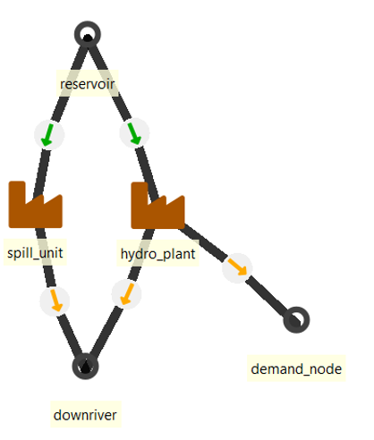
The database also includes an example of a river system with two additional reservoirs and plants. Both of them flow to the reservoir already made in this how to. These two are created the exact same way as above, but with just different values and the relation unit_outputNode: (hydro_plant_2| reservoir) and unit_outputNode: (hydro_plant_3| reservoir).
In principle you can create as large river systems as you want, but each reservoir adds extra computational burden. Think about the possibility to combine the reservoirs and plants in the system and what information you lose with this approximation.
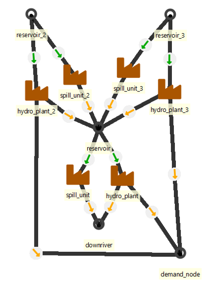
How to create a hydro pump storage
(hydro_with_pump.sqlite)
For a hydro pump storage one needs the following components:
- Demand
node - hydro_plant
unitwith - storage
node, - hydro_pump
unitwith - pump storage
node - a source for external energy (pumped storage plant will lose energy due to charging losses). Wind power plant will be used as a source for external energy.
There are two ways to handle the water to electricity coefficient. Here, we convert the reservoir capacity and inflow to potential energy. The unit of the inflow should be the power that can be created from the quantity of the incoming water at maximum efficiency [MW]. In the same way, the existing storage capacity should be the maximum amount of stored energy that the reservoir can hold [MWh]. In this implementation of reservoir hydro power, there is an option to spill water (energy) from the storage so that it does not run through the plant. The simplest way of allowing spilling is setting the downward penalty of the node to 0. This way the energy can disappear from the storage without a cost. The quantity of spilled energy can be seen from the results as the 'downward slack' of the node.
The required parameters of the reservoir node are (node_c and node_t sheets if using Excel input data):
is_active: yeshas_balance: yeshas_storage: yesinflow: Mapping of the incoming water as the potential power [MW]existing: The maximum size of the reservoir as the potential energy [MWh]penalty_up: a large number to prefer not creating energy from nowherepenalty_down: 0 or a large number (spilling or not)- a
storage_methodto set the behaviour on how the storage levels should be managed - for short duration storages bind_within_timeblock may be best and for seasonal storages it could be best to use bind_within_solve. If historical storage level time series are available, it can be beneficial to use fix_start in thestorage_start_end_methodtogether withstorage_solve_horizon_methoduse_reference_value, which will pick the storage level at the end of each solve from the time series provided as a reference (storage_state_reference_value).
The unit is connected to the reservoir node and the output node nodeA (unit_c and unit_node_c in excel):
- The
efficiencyof the unit can be set to 1 as the inflow time series are directly expressed in MWh (using piecewise linear efficiency is naturally possible). - Set
existingcapacity [MW] is_active: yes- Create relations
unit__inputNode: hydro_plant|reservoir andunit__outputNode: hydro_plant|nodeA.
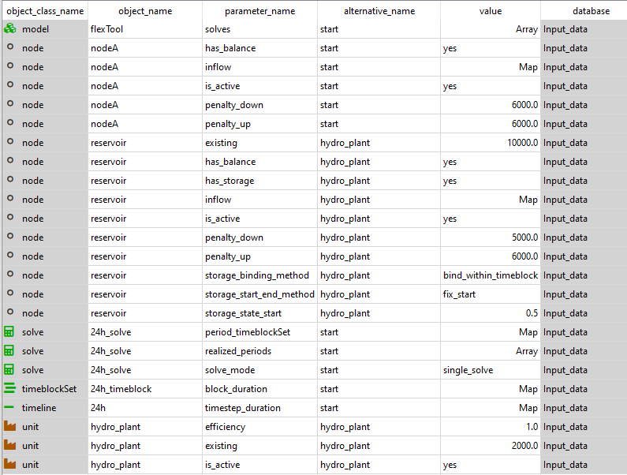
Next create the pump_storage. This is the downstream storage from the hydro plant. Again it should have the parameters as the reservoir:
is_active: yeshas_balance: yeshas_storage: yesexisting: The maximum size of the storage [MWh]. Note that this really represents the mass of the water and it should be converted as the potential of the energy of the reservoir-plant system. So that 1 liter of water has the same energy in both storages.penalty_up: a large number to avoid creating energy from nowherepenalty_down: 0
In this example database, we have both a closed system and a river system. The difference is that in the closed system the inflow is zero in both reservoir and pump_storage. In river system we have the incoming water for the reservoir as in the reservoir example. In the downstream pump storage, we implement an outflow as the negative inflow representing the minimum amount of water that has to flow out of the system at each timestep to not dry out the river. The penalty_down is set as 0 to allow it let more water go when it needs to, otherwise the storages will keep filling up if the incoming water is larger than the minimum outgoing water.
The storage level fixes should be the same in both storages (reservoir and pump storage). Here:
fix_start_end_method: fix_startstorage_state_start: 0.5bind_storage_method: bind_with_timeblock
This sets the starting storage levels to be 50%. The binding will also constrain the state of the storage at the end of of each timeblock to be the same as in the beginning of the timeblock.
Then create the pump unit. It only needs three parameters:
efficiency= 1, The real efficiency of the pump is set elsewhere, so use 1.0 here.existing: The wanted capacityis_active: yes
Set the relationships as follows:
unit_outputNodefor (hydro_plant | nodeA), (hydro_plant | pump_storage ), (hydro_pump | reservoir)unit_inputNodefor (hydro_plant | reservoir), (hydro_pump | pump_storage), (hydro_pump | nodeA)
Your system should look something like:

Next comes the tricky part of preserving the water and energy as both are represented as generic energy in the model. This is done by setting extra coefficents and constraints to the flows. First the hydro_plant needs to both create the energy for the demand node and pass the mass to the pump_storage. This is done by doubling the efficiency in this example to 2 and setting a extra constraint to force the output flows to both the demand node and the storage to be the same.
For the hydro plant:
Efficiency: 2
Create a new constraint (here plant_storage_nodeA_split) and add the parameters:
is_active: yessense: equalconstant: 0.0
And for the unit_outputNodes:
- (hydro_plant | nodeA)
constraint_flow_coefficientMap: plant_storage_nodeA_split , 1 - (hydro_plant | pump_storage)
constraint_flow_coefficientMap: plant_storage_nodeA_split , -1 - Meaning:
flow to nodeA - flow to pump_storage = 0
As for the pump storage, we will have to make sure that the same amount of water leaves the pump_storage and enters the reservoir. Also it still should use electricity from the demand node without increasing the amount of water that is moving from storage to another. First to prevent the energy from the demand node from increasing the water flow, add a coefficient to the flow between the demand node and the pump.
unit_inputNode (hydro_pump|nodeA):
- Coefficient: 0 (Default is 1)
This prevents the water amount from increasing as:
unit_output_flow = coeff1 * unit_input_flow1 + coeff2 * unit_input_flow2.
We still have to make the unit to consume electricity even though it does not affect the unit output directly. This is done by setting a new constraint to tie the flows to the pump unit from pump storage and the nodeA. Add a constraint (here pump_storage_nodeA_fix) the with the parameters:
is_active: yessense: equalconstant: 0.0
And setting parameters for unit_inputNode:
- (hydro_pump | nodeA)
constraint_flow_coefficientMap: pump_storage_nodeA_fix , 2 - (hydro_pump | pump_storage)
constraint_flow_coefficientMap: pump_storage_nodeA_fix , -1
2 * flow_from_nodeA - flow_from_pump_storage = 0
Note that here the (constraint_flow_coefficient Map: plant_storage_nodeA_split , 2) actually sets the efficiency of the pump.
This means that here only half of the electricity used by the pump can be recovered when that amount of water is used by the hydro_plant. (Two units of energy are used to move 1 unit of water_energy)
The constraint_flow_coefficient for pump_input should therefore be (1/efficiency)

How to add a reserve
(init.sqlite: scenario network_coal_wind_reserve)
In FlexTool, reserves are defined for a group of nodes. If there is a need to have a reserve requirement for a single node, it needs its own group. Therefore, when creating a reserve, the first step is to add a new group (e.g. electricity) with all member nodes (e.g. west, east and north) using the group__node relationship class. Then, a new reserve categories can be added (e.g. primary) to the reserve object class.
Finally, make sure there are up and down objects in the `UpDown' object class. These are hard-coded names in FlexTool and need to be used when creating reserves.
Next, the reserve requirement will be defined. A relationship between in the reserve__upDown__group class (e.g. primary--up--electricity) allows to define the reserve parameters reserve_method, reservation (i.e. the amount of reserve) and penalty_reserve (i.e. the penalty cost in case of lack of reserve). For example, a constant of 10 MW could be used. Even though the name of the reserve_method is timeseries_only, it can also accept a constant value - it's an exogenous reserve requirement whereas the other two reserve methods are endogenous. Dynamic reserve method calculates the reserve requirement from generation and loads according to user defined factors (increase_reserve_ratio). Largest failure method will force enough reserve to cope with a failure of the chosen unit and connection flows.
Parameters from the reserve__upDown__unit__node class should be used to define how different units can contribute to different reserves. Parameter max_share says how large share of the total capacity of the timestep (existing * efficiency * (profile)) of the unit can contribute to this reserve category (e.g. coal_plant may be limited by ramp constraint to provide only 1% of its capacity to an upward primary reserve.) Meanwhile, parameter reliability affects what portion of the reserved capacity actually contributes to the reserve (e.g. wind_plant may contribute only 80% of its generation to reserve due to uncertainty).

How to add a minimum load, start-up and ramp
(ramp_and_start_up.sqlite)
Some plants cannot vary their output freely, but have some cost and limits associated with it. In this example we will add the minimum load behaviour to a coal_plant unit and add the cost and limits for starting up and ramping the plant respectively.
Minimum load requires that the unit must have an online variable in addition to flow variables and therefore a startup_method needs to be defined and an optional startup_cost can be given. The startup_cost is added to the total cost every time the unit is required to start-up. Here we use a value 1000 (Currency/MW started up).
The options for the startup_method are no_startup, linear and binary. binary would require an integer variable so linear is chosen. However, this means that the unit can startup partially. The minimum online will still apply, but it is the minimum of the online capacity in any given moment (flow >= min_load x capacity x online), where 0 <= online <= 1.
The online variable also allows to change the efficiency of the plant between the minimum and full loads. A unit with a part-load efficiency will obey the following equation:
+ sum_i[ input(i) * input_coefficient(i) ]
=
+ sum_o[ output(o) * output_coefficient(o) ] * slope
+ online * section
where slope = 1 / efficiency - section
and section = 1 / efficiency
- ( 1 / efficiency - min_load / efficiency_at_min_load) / ( 1 - min_load )
By default, input_coefficient and output_coefficient are 1, but if there is a need to tweak their relative contributions, these coefficients allow to do so (e.g. a coal plant might have lower efficiency when using lignite than when using brown coal).
The input is required at different ouput levels is shown in the figure below, when Capacity = 100, Efficiency = 0.8, Minimum load = 0.6 and Efficiency at minimum load = 0.5.
Next we will add ramp limits. With the ramping limits, the user can force the change of a flow from a unit to be below a certain value each timestep. The ramping is an attribute of the flow. Therefore it does not require the minimum load behaviour and its parameters are added to the unit_outputNode relationship:
ramp_method: ramp_cost, ramp_limit or both. Only ramp limit is currently implemented (August 2023).ramp_speed_up: Limit on how fast the plant can ramp up. (fraction of unit / min) ie. Value 0.01 allows the change of 60% of capacity per hour.ramp_speed_down: Limit on how fast the plant can ramp down. (fraction of unit / min) ie. Value 0.01 allows the change of 60% of capacity per hour.ramp_cost: NOT YET IMPLEMENTED. The cost of ramping the capacity. [CUR/MW]

How to add CO2 emissions, costs and limits
(init.sqlite scenario: coal_co2 ) init - west - coal - co2_price - co2_limit
Carbon dioxide emissions are added to FlexTool by associating relevant commodities (e.g. coal) with a co2_content parameter (CO2 content (tons per MWh) of energy contained in the fuel).
The other CO2 parameters are handeled through a group of nodes (Here coal_price or coal_limit groups). Therefore one needs to create a group and add all the nodes that supply these commodities (eg. coal_market) to a group with a group_node relationship. (Here the relationship co2_price--coal_market)
To set a price one needs to create set the co2_method parameter to price (constant) and create the co2_price parameter with the desired value. This price is added to the price of the commodity.
Alternatively one can set a limit on the co2 used by setting the co2_method parameter to period or total and setting the co2_max_period (periodic map [tCO2]) parameter or co2_max_total (constant [tCO2]) parameter.
There methods can be combined by setting the co2_method to price_period, price_total, period_total or price_period_total.
How to create a non-synchronous limit
(non_sync_and_curtailment.sqlite) (scenario: non_sync)
Non-synchronous limit is a property of a group of nodes. It states that the non-synchronous flow to the group of nodes cannot exceed a set share of the input flows at any timestep. To demonstrate this, we have set a system with a coal plant, a wind plant and a single demand node. However, it can be done to a group of nodes with unlimited number of plants or connections connected. So, one can limit the non-synchronous share of individual nodes or of the whole system. The flows between the nodes of the group are excluded.
The non-synchronous limit is set to a group of nodes with one or multiple members. Note: These are set to the group with group_node relationship, not with group_node_unit relationship!
Create a group (here nodeA_group) and set a group_node relationship (nodeA_group |nodeA). Then add parameters:
has_non_synchronous: yesnon_synchronous_limit: 0.5penalty_non_synchronous: 4000
This forces the non-sync flow to be at max 50% of the incoming flow to the nodeA.
The penalty should be always set as in some cases there is no other way to keep the constraint feasible (and it will be difficult to find the reason why the model does not solve). The existence of the non-synchronous penalty in your results indicates that this constraint has been violated and you should investigate the reason for this in your system. If the penalty_non_synchronous is lower than the upward_penalty of the demand node, the system will prefer breaking the non-sync constraint instead of the node balance equation. In other words, it will not curtail the production of profile plants if the demand is not satisfied even though it will break the non-synchronous penalty. If it is higher, the curtailment will take place instead.
When having a connection to a storage from a node with this constraint, the best practice is to add this storage node to the group as well. This excludes the flows to and from the storage in the calculation of the non-synchronous ratio. However, if you want to have these flows in the calculation, you have two options depending on if you want the flow to be synchronous or not. If it is non-synchronous, just set the connection parameter is_DC: yes. If it is synchronous (e.g., some flywheels), an issue arises with the reqular connection as it now can reduce the ratio with equal simultaneous flow in both directions. To prevent the simultaneous flow to both directions you need to set the transfer_method: exact. This will increase the solving time significantly as it will use integer variables (so, better to add the storage node to the node group with a non-synchronous limit).
Then set which plants and connections are considered non-synchronous by adding parameters:
unit_outputNode:
- is_non_synchronous: yes
Connection_node_node:
- is_DC: yes
Here the (wind_plant|nodeA) relation has the is_non_synchronous parameter and battery connection is_DC parameter.
A connection with transfer_method: no_losses_no_variables between a node included in a group with a non-synchronous limit and a node outside of the group is not allowed. The flow in this kind of a connection is presented with a single variable, which would not function correctly with the non-synchronous limit constraints (there is a non-linearity at zero that requires two variables).
If you want to see the individual flows in the results you can create separate groups for the flows and add group_unit_node relations to it. To produce the flow results, the groups need the parameter.
output_results: yes
Here we have coal_flow group with group_unit_node relation coal_flow|coal_plant|nodeA
and wind_flow group with group_unit_node relation wind_flow|wind_plant|nodeA.
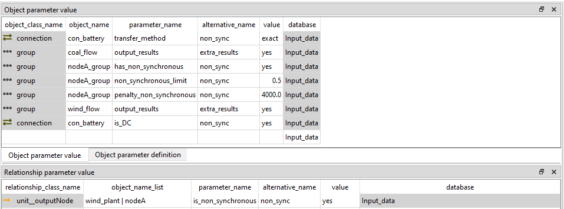
How to see the VRE curtailment and VRE share results for a node
(non_sync_and_curtailment.sqlite) (scenario: curtailment)
When the system has profile-units with the profile_method: upper_limit, the model can curtail the unit's flow to avoid penalties.
The curtailment could take place for several reasons:
- the supply is higher than the demand and the energy cannot be stored or transferred (further)
- non-synchronous limit
- extra flow constraints have been set
- other unit specific constraint affecting how VRE units or other units are forced to behave (ramp, start-up ...)
To see the curtailment results you need to add a group of nodes (group_node not group_unit_node !) with one or more members. The group then needs the parameter:
output_results: yes
This produces the group: indicator result to the Results database and group_summary table to the excel.
These changes were done to the previous non-sync example database.
Note: The results are the share of curtailment in relation to the inflow (demand) so it can exceed 100% as seen in the figure.
How to run solves in a sequence (investment + dispatch)
(init.sqlite scenario: 5weeks_invest_fullYear_dispatch_coal_wind)
In this example, investment decisions are made using a five week sample of a year and then the dispatch is solved with the full year timeline using these investments.
To do this you need two solves:
- Investment solve
- Dispatch solve
Both solves should solve the same periods using different timeblockSet to represent these periods. This example has only one period p2020 describing a year. The investment solve uses a representative sample timeblockSet 5weeks to do the investment decisions. These are then passed to the dispatch solve that uses complete timeline fullYear.
Investment solve requires the parameters:
Invest_periods: Array of periods where investments can be maderealised_invest_periods: Array of periods that are output for investment decisionsperiod_timeblockSet: Uses the 5weeks as the timeblock
Note that the realized_invest_periods is used instead of realized_periods, because we want the investment solve to only output investments.
Additionally some of the units, connections or storages will need investment parameters (invest_cost, lifetime...) see How to make investments (storage/unit)
The dispatch solve requires the parameters:
realized_periods: Array of output periodsperiod_timeblockSet: Uses the fullYear as the timeblock
The sequence of solves is defined by the model parameter solves. Here it is an array where the first item is an investment_solve 5weeks_only_invest and the second is the dispatch solve y2020_fullYear_dispatch. This is enough for the model to know to pass the investment decisions of the period to the period of the same name in the second solve.
Note that the picture has two model: solves parameters defined one for each alternative. Only the parameter from the 5weeks_only_invest is used as the lower alternatives in the scenario tree override the values from the higher alternatives and only one model can be run.
How to create a multi-year model
A multi-year model is constructed from multiple periods, each presenting one year. In the example case, each year is otherwise the same, but the demand is increasing in the west node. This means that all periods can use the same timeblockset 5weeks from the same timeline y2020, but one can also make separate timelines for each year, if data is available for this. The inflow time series are scaled to match the value in annual_flow that is mapped for each period. The model is using the inflow_method scale_to_annual in order to achieve this (default is use_original that would not perform scaling). There should also be a discount_rate parameter set for the model object flexTool if something else than the model default of 5% (0.05 value) is to be used.
A multi-year model could be solved at one go (multi_year_one_solve) or by rolling through several solves (multi-year) where each solve has a foresight horizon and a realisation horizon. Next we will go through both options.
Multi year with one solve
(init.sqlite scenario: multi_year_one_solve)
In this example, one solve is used for all the four periods. All the four periods need to be added to the solve arrays invest_periods and realized_periods. Here the same timeblock is used for all the four periods, so only difference between them is the increasing inflow set above. The parameters that need to be added to the solve object:
years_representedparameter is used by the model to calculate the discounting factors for the periods in the model (often future years). It should state the number of years each period will be representing. For example, a period for 2025 could represent the years 2025-2029 if itsyears_representedis set to 5. Any investments would be taking place at the start of 2025 and discounted to the beginning of 2025, but the operational costs would accrue from each year in 2025-2029 each with a different discounting factor (decreasing based on the interest rate).invest_periodsthe periods in which the model is allowed to make investments.realized_periodsthe periods that will be realized in this solve (outputs dispatch results for these periods).period_timeblocksetdefines the set of representative 'periods' (timeblocks in FlexTool) to be used in each FlexToolperiod.
Multi year with rolling solves
(init.sqlite scenario: multi_year)
If the solving time gets too big, there is an option to split the timeline into overlapping parts and solve them separately. This shortens the solving time as it increases exponentially as the model grows. Therefore, collection of smaller solves is faster. The drawback is that the accuracy will be affected if there are dependencies with a larger time interval than the split size.
When dealing with investments the splitting only works if the different periods are similar, in most cases complete years. If the first solve is really windy, it would invest too much on wind which wouldn't produce enough energy in later solves and then it would need to invest again to something else. It can also be challenging to consider lifetimes. If the option of retiring is allowed, it might retire something that is needed for later solves. In this example, the periods are complete years and the only difference between periods is increased demand.
The model rolls through several solves and therefore, the model object flexTool has four values in the solves array. Each value represents one solve and it's position in the sequence of solves. The next figure illustrates the realization (blue) and foresight horizons (grey). The first solve will solve both the year 2020 and year 2025, but it will only output the year 2020. The next will solve both 2025 and 2030 but only output 2025.

Next figure shows the values needed to define one solve (out of the four solves in the example). Each of these need to be repeated for each solve in the model.
years_representedparameter is used by the model to calculate the discounting factors for the periods in the model (often future years). It should state the number of years each period will be representing. For example, a period for 2025 could represent the years 2025-2029 if itsyears_representedis set to 5. Any investments would be taking place at the start of 2025 and discounted to the beginning of 2025, but the operational costs would accrue from each year in 2025-2029 each with a different discounting factor (decreasing based on the interest rate).invest_periodsthe periods in which the model is allowed to make investments. To be given for each solve.realized_periodsthe periods that will be realized in this solve (outputs dispatch results for these periods). To be given for each solve.invest_realized_periodsparameter states the periods that will realize the investment decisions. If not stated, it will userealized_periods.period_timeblocksetdefines the set of representative 'periods' (timeblocks in FlexTool) to be used in each FlexToolperiod.
Note the the solve_mode: rolling_window is not used! This is not for investment runs (without nesting) as it rolls freely, and investments should only be made at the start of the period. This example is called 'manual rolling' later when those are discussed.
In the init.sqlite, the solve objects have solver parameters: highs_method, highs_parallel and highs_presolve. They only affect the speed and not the results, but usually the default values are good enough and the user should only change them if they understand how the solvers work.

How to use a rolling window for a dispatch model
A rolling window can be used for example when a dispatch model gets too big to be solved on one go. It splits the problem into multiple consecutive smaller problems.
The rolling window solve splits the time dimension into overlapping parts and solves each one of them separately but in a sequence (and can therefore pass state information from the previous solve to the next one). For example, instead of a solving the full year in one go, you can split the year into six four-month long solves where each solve outputs only the first two months. The solves would therefore include the months:
- Roll: Solve months -> Output months
- 1: [1,2,3,4] -> [1,2]
- 2: [3,4,5,6] -> [3,4]
- 3: [5,6,7,8] -> [5,6]
- 4: [7,8,9,10] -> [7,8]
- 5: [9,10,11,12] ->[9,10]
- 6: [11,12] -> [11,12]
The rolling solve could be setup also manually as described in the 'How to run a multi year model' - just using shorter periods.
However, this would be tedious if there are many solves. In a rolling window model, the user can set the rolling_jump and rolling_horizon parameters, which are expressed in hours.
-
rolling_horizon: sets the length of the whole solve, in hours. In previous example 4 months (2880 hours). Horizon allows the model to see bit further in the future to improve the decision making for the period that will be output. -
rolling_jump: sets the interval for the length of each 'jump' the model takes forward in reach roll. It is then both the interval of roll starting points and the length of the output for each roll. Therolling_jumpmust be smaller than therolling_horizon. In the previous example therolling_jumpwould be 2 months (1440 hours).
In addition, the user can set the duration for how long the model will roll:
rolling_duration: Optional (hours), the length of combined rolls. In the example, it could be set to 8640 hours which would divide evenly, or 8760 hours which means that the last roll will be shorter than the others. It is nicer to userolling_jumpthat is divisable with therolling_durationto keep rolls even. Ifrolling_durationis not set, it defaults to rolling through the whole timeline.
When using rolling window solve, you are solving the model with less information. Therefore, the results will be less optimal since the model will not have the full information at once. It is therefore important to know how this could affect the results and what things to consider when implementing a rolling window model. It will have an impact on time dependant parts of the model: for example, storages or cumulative flow constraints. If the model can see only a few months to the future, it can't see how much energy needs to be stored after that.
Investments should not be used with this free rolling solve (solve_mode: rolling_window) as investments should only be done at the start of the periods. Both the long-term storage and the investments can be taken into account with nested rolling solves that have a separate how-to.
Short term storages also are operated less optimally in a rolling window model. There is a positive side to this as well, since perfect foresight linear optimization models are 'too optimal'. They don't reflect the forecast errors present in real life. So, a rolling window model might operate a bit more realistically than a single_solve model. A single_solve model can consider things happening far in the future when setting the storage level at present, even though in reality that information is not available. So, the total cost of a rolling_window model should always be higher than the total cost from a complete single_solve model that has perfect information.
To set a dispatch rolling window model you need to set the object solve parameters:
solve_mode: rolling_windowrolling_jump: Hours, the desired length of the solve intervalrolling_horizon: Hours, the desired length of each roll solverolling_duration: (Optional) Hours, the length of the combined outputs. If not set, the whole timeline is used.
Considerations on the rolling times:
- The
rolling_jumpandrolling_horizonmust be large enough to make the model faster. If too small intervals are used, the creation of solves and moving data from solve to another might take too much time. - If you are not using 1-hour timesteps, preferably use multiples of the timestep you are using as the
rolling_jumpandrolling_horizon. The steps included in each solve are calculated by summing the step durations until they are larger or equal to the hours given. So, if multiples are not used, the rolls might not be exactly the same size. - The model can roll over timeblock and period jumps, which might cause some issues if storage constraints are used. Using timeblock length or its multiples is therefore recommended. For example, the
rolling_jumpcould be a half of a timeblock and therolling_horizonwhole timeblock orrolling_jumpa timeblock androlling_horizonthree timeblocks. Of course, when running e.g. a full year dispatch, there is only one timeblock of 8760 hours, which makes the choices more simple.
Considerations on storage parameters:
storage_solve_horizon_methoduse_reference_value or use_reference_price are the preferred means to bind storage values. They can be used together with thestorage_state_start_end_method: start, which would then set the initial storage state. These methods bind either the storage value or the storage price at the end of horizon (not the end of jump). This allows the storage to use the part of the horizon that is not output to improve the behaviour of the storage in the part that is output (as defined byrolling_horizonandrolling_jump).bind_within_timeblockdoes not work correctly if the rolls don't include whole timeblocks. Instead, it will bind the first step of the roll (whatever it is) to the end of the timeblock. Do not use in nested solves if you are not using whole timeblocks or its multiples asrolling_jump- the same applies to the
bind_within_period(but in relation to periods - do not use this unless you arerolling_jumpis as long as a period or its multiples). storage_start_end_methodcan be used to set the first timestep of the first roll and/or the last timestep of the last roll (in conjunction withstorage_state_startandstorage_state_end).bind_within_solvebinds the start state to the end state of each roll not the start and end of the whole model timeline. Use with caution (and probably best not to use together withstorage_solve_horizon_methoduse_reference_value).
How to use Nested Rolling window solves (investments and long-term storage)
The basic rolling solve can have problems in dealing with long term storage and with investments. If the model only sees a few weeks to the future, it really can't see how much energy should be stored in long term storages. Problems with investments can also be serious: If the first roll is really windy, the model would overinvest in wind power that is not profitable in the later rolls. Similarly, if the model is allowed to retire capacity, it might retire something that is actually needed in the later rolls.
Nested solve sequences can first solve the investments and long-term storage levels and pass them to the dispatch solve. Both storage solve and dispatch solve can be rolling solves. The dispatch solves can then send the end storage values to the investment and long-term storage solves as start values to reduce the error of these solves.
When to use nested solves?
- Dispatch model is taking too long to solve, but simple rolling window solve would not represent the long-term storages correctly. (Nesting without the investment solve)
- Investment model takes too long to solve, even with manual rolling How to create a multi-year model. With nesting you can have smaller rolls for dispatch solve than the investment solve. (Nesting without the storage solve)
- Investment model takes too long and you have long term storages to consider. (Three level nesting, graph below)
However, the obvious issue is that investment and storage solves cannot be solved using the old complete solve as it wouldn't make the solve time any shorter. Therefore, we need to decrease the information for investment and storage solves as well. There are a few options for this:
- Use lower resolution (longer timesteps). This can work quite well for a long-term storage.
- Use representative periods from the full timeline when performing investments. There is a large body of literature and methods on how to pick the representative weeks.
- Split the investment timeline (myopic investments) by manually creating a solve sequence for the investment solves like in: How to create a multi-year model section. This can be combined with the first or second option.
Each of these have their pros and cons:
- Using the lower resolution can speed-up the model considerably, but it also means that everything that happens faster than the new timestep duration will be lost as the timestep varying parameters are averaged or summed for the new timestep. For example, consider a model with investment options to solar and storage. If the step duration is changed to 24 hours, the model won't invest in enough storage to mitigate the diurnal variation in PV. When these investments are then passed to the dispatch solve, the invested portfolio will have trouble meeting the demand.
- Using the sample can be effective if the sample is chosen well, but all the needs that are not in these samples are not included. The speed is heavily dependent on the number and size of those samples.
- Splitting the investment timeline for multi-year models can be seen as a relatively realistic approach, since investment decisions would have a lot of uncertainty in the longer time frame anyway.
The investment decisions with less information are always less optimal than with complete solves. Therefore, when they are passed to the dispatch solve, it will in some cases cause penalties in the results when the invested portfolio is not sufficient to meet the demand at all times.
The long term storage solve can be implemented using a lower resolution solve. The storage state values from the storage solves will be used to fix the storage value (or price) at the end of each dispatch solve. This means that on the last step of the roll (or the period), the storage quantity (or price) will have to match the quantity (or price) in the storage solve. The rolling_jump and rolling_horizon in the storage solve have to be longer than in the dispatch solve. You can set which storages are included as "long term storages" whose value will be transferred to the dispatch solve.
To create a nested solve sequence, you need two or three solve objects. Either the investment solve or the storage solve can be left out. When using nested solve sequence, the sequence is not set with the model: solves parameter. Only the topmost solve is put there. Instead, the nested levels are set by the solve parameter contains_solve: solve_name. The investment solve is always on the top followed by the storage solve and dispatch solve:
- investment_solve
solveparametercontains_solve: storage_solve_name - storage_solve
solveparametercontains_solve: dispatch_solve_name
To create a storage solve:
solveparameterfix_storage_period: Array of periods where the storage values are fixed in the lower solve. Should be the same asrealized_periodsfor the dispatch solve.nodeparameterstorage_nested_fix_method: fix_quantity or fix_price, includes this storage to be fixed. fix_price requires storage_state_reference_price to be set.
To create an investment_solve:
solveparameterinvest_periods: Array of periods where the model can invest.solveparameterrealized_invest_periods: Array of periods where the model will realize investment decisions to the lower solves and results.solveparameterrealized_periods: Should not be used in this solve! You don't want the dispatch results from this solve, but from the dispatch solve.
In addition, the rolling dispatch solve should be created as in the How to use rolling window solve for dispatch. To set a dispatch rolling window model you need to set the object solve parameters:
solve_mode: rolling_windowrolling_jump: Hours, the desired length of the solve intervalrolling_horizon: Hours, the desired length of each roll solverolling_duration: (Optional) Hours, the length of the combined outputs. If not set, the whole timeline is used.realized_periods: Array of periods that are realized
The other model parameters apply to all of the solves. Therefore, the considerations of the storage value binding that were discussed in the How to use a rolling window for a dispatch model should be taken into account here as well.
- Storage levels can be fixed with
storage_solve_horizon_method: use_reference_value or use_reference_price, these will fix the end of each horizon not each jump. storage_start_end_methodfixes the starts and/or ends of each solve level, meaning the first step of the first roll and the last step of the last roll.- In most cases the
bind_storage_methodshould be left as bind_forward_only - Do not use
bind_within_timeblockif you are not using full timeblock or its multiples as therolling_jumpin the dispatch model, otherwise you might cause an infeasible problem. - Do not use
bind_within_periodif you are not using full periods or its multiples as therolling_jumpin the dispatch model, otherwise you might cause an infeasible problem. - Do not use
bind_within_solve
The recommended storage parameters with nested solves are:
- storage_start_end_method: fix_start
- storage_solve_horizon_method: fix_quantity
- storage_state_start and storage_state_reference_value: use the same value
This way the start and end states of the system are the same. Each end of the horizon (not the output) has that value as well, which keeps the model from emptying the storages at the end of the roll. In the dispatch solve, the fixed storage value from the storage solve overrides the horizon end value if a conflict exist.
How to create the three lower information solve types for investment and storage solves discussed above?
To create a lower resolution (longer timesteps) solve:
- Make a new
timeblockSet, but use the sametimelineandblock_durationfor it as with the high resolution solve - Set
timeblockSetparameternew_stepduration: Hours - In the
solveuse this newtimeblockSetin theperiod_timeblockSet
The model will create a new timeline for this solve with the new_stepduration. All the timestep map data like inflow or profile will be either summed or averaged for the new timeline. Again, the new_stepduration should be multiple of the old step duration. If the block_duration is not a multiple of the new_stepduration the last timestep will be shorter than the rest.
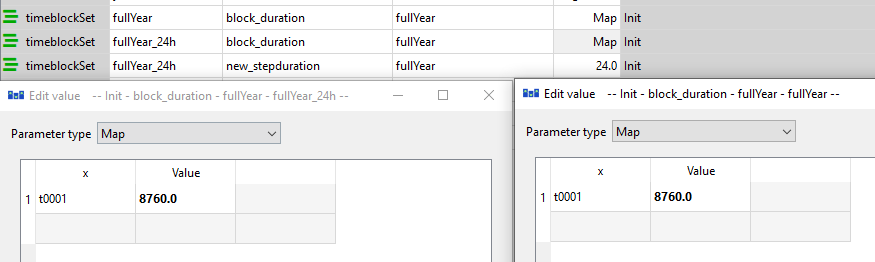
Note that if the last timestep of the dispatch horizon is not in the storage solve timeline, it will use the last available timestep to fix the storage. This can happen at the end of the timeline when the dispatch solve with a lower step size can fit an extra step after the last time step of the storage solve.
Other reason might be that both dispatch and storage solves are aggregated with the new_stepduration. In that case, it is usually best to use values for the new_stepduration that are dividable.
To create a sample solve with representative periods:
The tutorial contains an example of representaive periods under alternative 5weeks where the year is represented with five sample weeks. It is done with the timeblockSet parameter block_duration where instead of choosing the whole timeline by setting the first timestep and the duration of whole timeline, you choose multiple starting points with smaller durations. The example for the 5weeks is below.
To create an investment solve sequence, you have two options:
- Create manually a series of solves and set the
invest_periodsandrealized_invest_periodsindividually for the solves. How to create a multi-year model has an example of this with the difference that here you userealized_invest_periodsinstead ofrealized_periodsand that each of the higher level solves requires thecontains_solveparameter.
If you have many splits, this option can get tedious and prone to mistakes.
The other option is to use only one investment solve object:
- The
invest_periodsandrealized_invest_periodsshould then be set with a 2D map where the first column tells the solve (you don't have to create separatesolveobjects for these) and the second column tells the period. To get a 2D map, choose the parameter type as Map and then right click the table and choose Insert column after/before. The value column does not matter. The model will generate these solves, with the periods given. Note that the solve names should match in both 2D-maps.
You can use the same lower level solve with each the investment solves as the lower level solves will exclude the periods that are not included in either of the upper level realized periods: realized_invest_periods or fix_storage_periods. So, the lower level solve should have all the periods that it is used for in any the solves.
Note that the results of a nested rolling solve run are not fully optimal, because the information in the model is decreased. This is the price you pay for the speed. Therefore, the results should not be taken as they are, instead it is important to know how to interpret the results: What phenomena are missing? How will they affect the results? Where should extra investments go to satisfy the demand (there is a possibility to use the capacity_margin method to force extra investments)?
In the init.sqlite there are four example scenarios related to this:
- multi_fullYear_battery: The four period full year single solve, with coal, wind, battery storage with unlimited investment possibilities. Running this is still possible but takes a few minutes. This is here as a reference for the nested solves.
- multi_fullYear_battery_nested_24h_invest_one_solve: This has the nested structure and the investment solve is done with 24h timesteps and storage solve 6h timesteps.
- multi_fullYear_battery_nested_sample_invest_one_solve: This has the investment solve as 5weeks sample but all the four periods are included in the same investment solve. Nested structure with 6h storage solve timesteps.
- multi_fullYear_battery_nested_multi_invest: This has split the investment to four solves with each having two period 5weeks sample period horizon. Nested structure with 6h storage solve timesteps.
The 24h timestep is clearly too long as it invests too little for storage and coal. A large upward penalty ensues.
The sample one solve invest also invests too little, as the largest demand-supply ratio weeks are not in the five week sample. However, the investments are spread more accurately.
The split sample investment run produces in this case similar results as the one solve sample run. This is not always the case! Here the only difference between the periods was linearly increased demand.
How to use stochastics (representing uncertainty)
(stochastics.sqlite)
Stochastics are used to represent the uncertainty of the future in the decision making. The main idea of it is to connect multiple scenarios (branches) of the future to the realized timeline. The model then optimizes the system to get the minimize the total cost all the branches (weighted by their probability). Only the realized timeline, shared between all branches, will be output.
For the stochastics to have an effect on the results, the system needs parameters that change between the stochastic branches. These could be e.g. wind power generation or fuel prices. The model will then have separate variables in every branch for all the decision the model can take ((e.g. invesment, storage state, online, flow). As a consequence, the realization phase will also be dependent on the things that happen in the stochastic branches - weighted by the probablity given to each branch.

In this example, we show three ways to use stochastics: Single solve, rolling horizon and multiperiod single solve. They all share the same test system that includes:
- A demand node
- Coal, gas and wind power plants
- Hydro power plant with a reservoir and a downriver nodes
The demand and the downriver nodes have a constant negative inflow. Therefore, the hydro plant capacity is partly in use at all times. The varying timeseries are the wind profile and the water inflow the reservoir. The coal commodity is more expensive than the gas, so the system will try to use the reservoir water to minimize the usage of coal. This will be affected by the forecast of the wind and the forecast of the water inflow. These are the stochastic timeseries in these examples.
You can have stochastics in multiple timeseries in the same solve, but these will have to share the branches. This means that for example if you have two wind plants with two different stochastic wind profiles with three branches (upper, mid and lower estimates) you need to think if it is best to use only three branches and put both of the upper estimates to the same 'upper' branch or should you use combinatorics to make nine branches. However, note that the tool will not do the combinatorics for you and the solving time will be heavily affected by extra branches. Consequently, the usual practice is to present all the stochastics using just e.g. three branches and consider the correlations between the stochastic parameters in the pre-processing of the input data.
Notes about the storage options with stochastics:
-
The best options to use are:
-
Storage_state_start_end_method: fix_start or fix_start_end (and the their values) -
storage_solve_horizon_method: fix_value or fix_price (and their values) -
Do not use any of the
storage_binding_methods, they do not work correctly with stochastics (there is no unambigious end state that could circle back to the first time step).
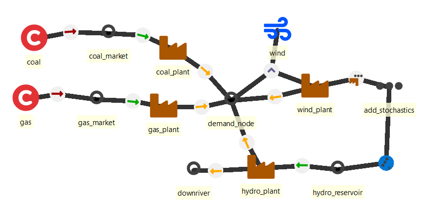
Single solve stochastics
(stochastics.sqlite scenario: 2_day_stochastic_dispatch)
In this scenario, 24 hours are realized with an uncertain forecast for the next day. The timeblock length is therefore 48 hours and the branching will happen at the timestep t0025. To set up a stochastic solve, we need three things: The stochastic branch information, the stochastic timeseries and choosing which parts of the model use stochastic timeseries.
The information about the branches are set with the solve parameter stochastic_branches. This is a 4 dimensional map. (Edit -> choose map -> right click -> add columns).
The columns are: period, branch, analysis_time (starting time of the branch), realized (yes/no) and the value is the weight of the branch. Each starting time, including the first timestep, should have one and only one realized branch. This realized branch is used for the non-stochastic parts of the model with a stochastic timeseries. In this example we have three branches: mid, upper and lower representing the three wind forecasts. The weight will influence the relative weight of each branch in the objective function (model costs). The weights are normalized, so that the total weight is always one in each timestep.
The stochastic wind timeseries are set with the same profile parameter profile but with a three dimensional map instead of the regular one dimesional map. The tool recognizes a stochastic timeseries from the dimensions of the data. The three dimensions are: branch, analysis_time and time. Here the realized part of the model (t0001-t0024) uses also the branch 'mid', which is one of the forecast branches as well. In the stochastic part, 'mid' is also set to be 'realized'. It is not actually realized (since the stochastic part is not realized), but it helps the model to choose which branch to use when there is no stochastic data available.
The parts of the model that will use stochastic data is chosen with a group parameter include_stochastics. The units, nodes and connections that are added to this group use stochastic timeseries connected to them (if available). Here we add the unit wind_plant to this group. There is a possiblity that to have two wind plants with the same profile, but use the stochastics on only one of them. The other would then use only the realized branch.
An option exists to output the stochastic horizons for debugging your system. This is done with the model parameter output_horizon. It will cause errors in the calculation of the cost in each solve (the costs of the unrealized branches will be included) so turn it off when you want the final results.
If you change the weights of the stochastic branches, you should see the results change.
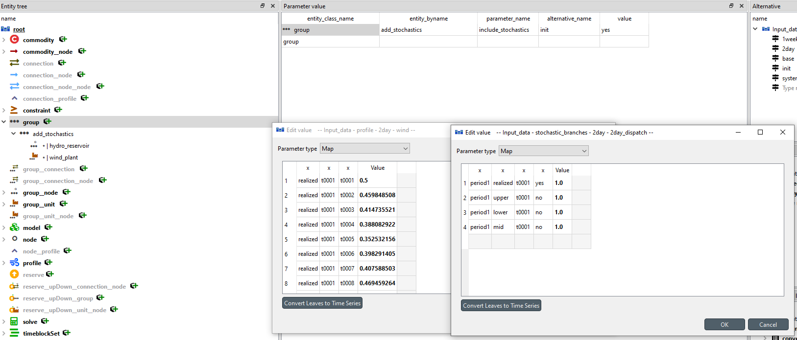
Rolling horizon stochastics
(stochastics.sqlite scenario: 1_week_rolling_wind)
In this scenario we extend the previous timeline to one week and roll through it one day at a time with additional three day stochastic horizon:
solve: rolling_solve_jump = 24 and rolling_solve_horizon = 96.
The stochastic data should be given so that it can serve the rolling structure: rolling_solve_jump dictates the duration of the initial non-stochastic part of the model horizon. This period needs only data for the 'realized' branch. The stochastic branches will begin only after that and need data only after rolling_solve_jump has been reached. So, for every 'analysis_time' there needs to be a time series in each stochastic branch that extends to the end of horizon (as defined by rolling_solve_horizon). The branches continue to the end of the horizon without branching again.
For the solve parameter stochastic_branches this means analysis times (t0001, t0025, t0049, t0073, t0097, t0121 and t0145). t0001 is there only to tell which branch is the realized one.
Otherwise there is no difference to the previous example.
Realized scenario should not typically be used as a forecast branch in a stochastic model. However, this would happen, if the realized branch has weight other than zero. So, to avoid this, its weight should be set to zero but its realized status to "yes". Then the values from the realized scenario are not included in the forecast branches, but they are used in the realized part of the timeline. This happens because the weight of the realized part of the timeline is always forced to be one (even though its weight has been set to zero).

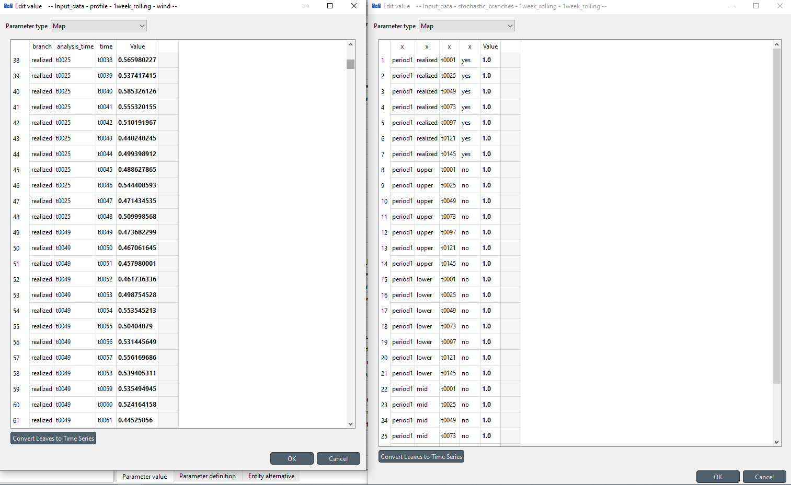
Multi periodic stochastics
(stochastics.sqlite scenario: 2_year_stochastic_invest)
Here we solve investment run with one realized year and other year as the stochastic horizon. When using stochastics on multiple periods, they should not use the same timeblock as the stocastics are set for a timestep not (period, timestep). This means that the same value would be used for all the periods with this timestep. Instead use consecutive timeblocks from the same timeline. Here the first timeblock has timesteps t0001-t8760 and the second timeblock has the timesteps t8761-t17520.
The stochastic_branches has one branching spot at the first timestep of the period2. This example uses the water inflow of the reservoir as the stochastic timeseries. If you run this scenario, you can see that it takes some time. When planning the stochastic data to be used, you should take into account that it will increase the solving time of the model significantly.
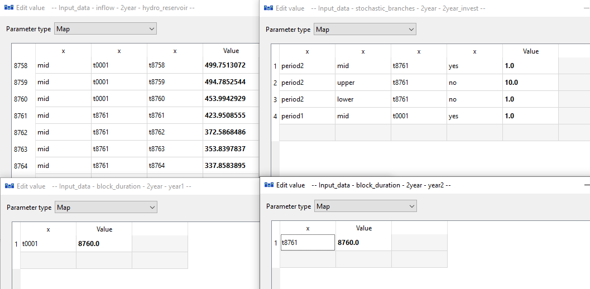
How to use CPLEX as the solver
Using CPLEX requires that you have installed the software, have a licence for it and have added it to PATH or to the environment where you are using the FlexTool, so that the tool can find the solver.
CPLEX is used when the solve parameter solver is set to 'cplex'. The tool passes the built optimization model to the CPLEX solver and converts the solution file to a filetype suitable for CPLEX. The solver will produce two additional files to the work directory: 'cplex.log' and 'flexModel3_cplex.sol'. The former is the logfile of the solver and the latter contains the solution in the CPLEX format.
The tool uses Interactive Optimizer to pass the problem to the solver. The default command used:
cplex -c 'read flexModel3.mps' 'opt' 'write flexModel3_cplex.sol' 'quit'
Additional parameters:
solver_precommandcreates a text in front of the cplex call. This is useful when dealing with floating licences. The command allows to call the licence server to reserve the licence for the duration of the cplex program with a command line argument.solver_argumentsis an array containing additional CPLEX solver commands
With these parameters, the command line call is:
'solver_precommand' cplex -c 'read flexModel3.mps' 'solver_command1' 'solver_command2' ... 'solver_command_last' 'opt' 'write flexModel3_cplex.sol' 'quit'
How to create aggregate outputs
It is often desirable to output results that focus on particular aspects of the model. For example, it can be useful to output all flows going in and out of all electricity nodes without the corresponding flows for other energy carriers (e.g. fuels used to produce the electricity). And if the model is large, some of those flows could be aggregated (summed).
The first aspect, choosing a group of nodes for which to output results for, is achieved by:
- creating or re-using a
group(e.g. electricity) - set the group's parameter output_node_flows to yes
- assigning all the relevant nodes to the group (using
group__node, e.g. electricity__west)
The second aspect, aggregating flows into one, is achieved by:
- creating or re-using a
group(e.g. all_VRE) - set the group's parameter output_aggregate_flows to yes
- assigning all flows that should be part of the group (using
group__unit__nodeorgroup__connection__node, e.g. all_VRE__wind1__west)
All flows that are part of a group that has output_aggregate_flows set to yes will then be output only as part of the aggregate in the group flow_t. In all other outputs, they will remain independent.
"How to database" (aggregate_output.sqlite) aggregates results for the nodeA and nodeB. Both of the nodes have a wind power plant and nodeA has a coal power plant. The demand is divided to the electricity, heat and irrigiation needs. This means that, besides an internal demand (inflow), both nodes output to the heat node while nodeA also outputs to the irrigation node. Additionally the nodes are connected to each other and the node_country_y1. The nodeA is connected to the node_country_x1 and nodeB is connected to the node_country_x2.
For the sake of the example, we are only interested in the nodeA and nodeB. Therefore, group focus_nodes is created and the nodes are added to it with group__node relationships. To simplify the results, the flows from the two wind plants are aggregated as one. Same applies to the heat pumps. This is done by creating the groups wind_aggregated and heat_aggregated. The flows are added to the group with the group_unit_node relationship.
Note that here the node has to be either nodeA or nodeB, not the heat node! E.g. the nodes from the wind_aggregated group_unit_node are tied to the nodes from the focus_nodes group_node only when they share same nodes (e.g. wind_aggregated__wind_plant_1__nodeA and focus_nodes__nodeA have nodeA in common). The group_unit_node can include other flows but only the ones that are have a node that is inside the focus_nodes group are included in the result table under the focus_nodes group.
Connections are simplified by creating groups connections_country_x and connections_country_y and adding the relevant connections with group_connection_node relationship. Again the node has to be either nodeA or nodeB to be included in the results.
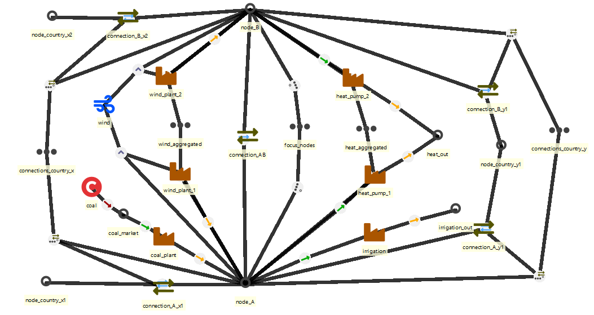
The focus_nodes group needs the parameter output_node_flows: yes and the unit and connection groups need the parameter output_aggregate_flows: yes.
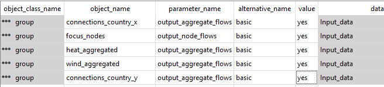
The resulting table has the flows to the focus_nodes group from units and connections. Additionally, the internal losses of the group are calculated. These are the flows between the nodes of the group and the storage losses. Here the losses come from the connection between nodeA and nodeB. Additionally the possible slacks to balance the nodes are included.
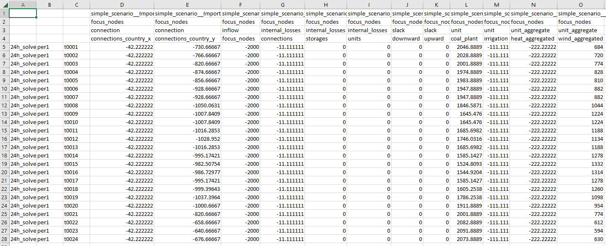
How to enable/disable outputs
Some of the outputs are optional. Some of these optional outputs are output by default while some are not (see below). Removing outputs speeds up the post-processing of results. The user can enable/disable them by changing the following parameters of the model entity:
output_node_balance_t: Default: yes. Produces detailed inflows and outflows for all the nodes for all timesteps. Mainly useful to diagnose what is wrong with the model.output_connection__node__node_flow_t: Default: yes. The flows between the nodes for each timestep.output_unit__node_flow_t: Default, yes. The flows from units to the nodes for each timestep.output_ramp_envelope: Default, no. Includes seven parameters that form the ramp room envelope. Shows the actual ramp as well as different levels of available ramping capability in a given node - for both directions, upward and downward. The first level includes ramproom in all the units, except VRE. The second level adds ramping room in VRE units (typically only downward, unless they have been curtailed. Finally, the last level adds potential ramping capability in the connections, which reflects only the ramproom in the connections themselves - the units/nodes behind the connection may or may not have capability to provide that ramp. (Parameter node_ramp_t)output_connection_flow_separate: Default, no. Produces the connection flows separately for both directions.output_unit__node_ramp_t: Default, no. Produces the ramps of individual units for all timesteps.output_horizon: Outputs the timesteps of the horizon outside the realized timesteps. Useful when constructing a stochastic model.
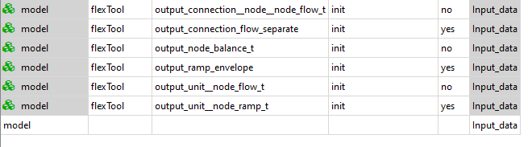
How to make the Flextool run faster
The list below contains potential ways to decrease the run-time of FlexTool models.
External changes (results will remain the same):
- Keep both the input database and Flextool on the same drive. If the database is on a different drive, it can slow the process. Avoid network drives.
- Try to ensure that there is sufficient memory available by closing other programs that use lot of memory. Linear optimization problems can require lot of memory.
- Use as fast computer as available. Both faster processors and more processors can decrease computation time.
Model changes (results will remain the same):
- Disable outputs that you don't need. This will speed up the result processing. See: How to enable/disable outputs
- When using HiGHS solver: in your solve's parameters, you can set highs_presolve = on, and highs_parallel = on to speed up the optimisation. However, it can be better to turn HiGHS parallel off when executing multiple scnearios in parallel.
- Especially with MIP problems, considering using a commercial solver like CPLEX (license required). See: How to use CPLEX as the solver
Model changes (results will be affected):
- Get rid of integer variables. Mixed integer programming can increase the solving time manyfold compared to the linear version especially if commercial solver is not available. MIP parameters are:
transfer_method: exact, change to reqularstartup_method: binary, change to linear
Model changes (potentially large changes to the results --> need to understand how the particular analysis will be affected):
- Use representative periods for investment decisions. See: How to create a multi-year model
- Split the timeline into parts. The solving time increases exponentially with the model size. Multiple smaller solves can be faster. Splitting is best done with Rolling window solve and Nested rolling solve. See: How to use a rolling window for a dispatch model, How to use Nested Rolling window solves (investments and long-term storage)
- Aggregate data. Technological: Combine power plants that are using the same technology. Spatial: Combine nodes. Temporal: Use longer timesteps.